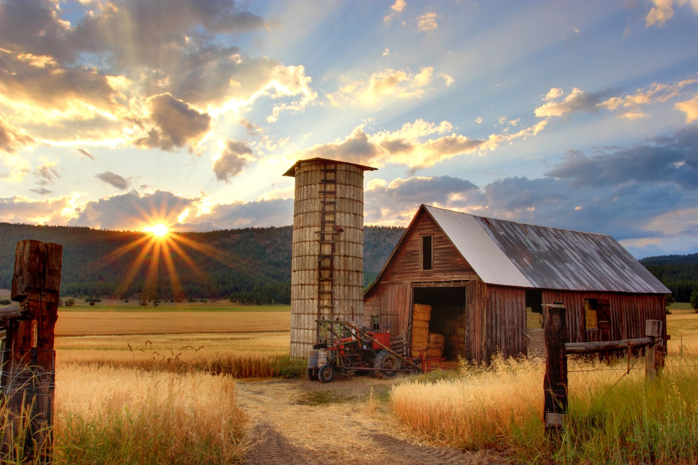
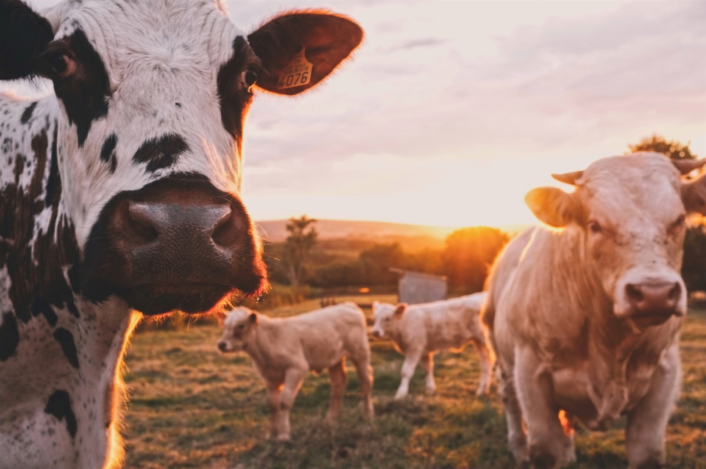
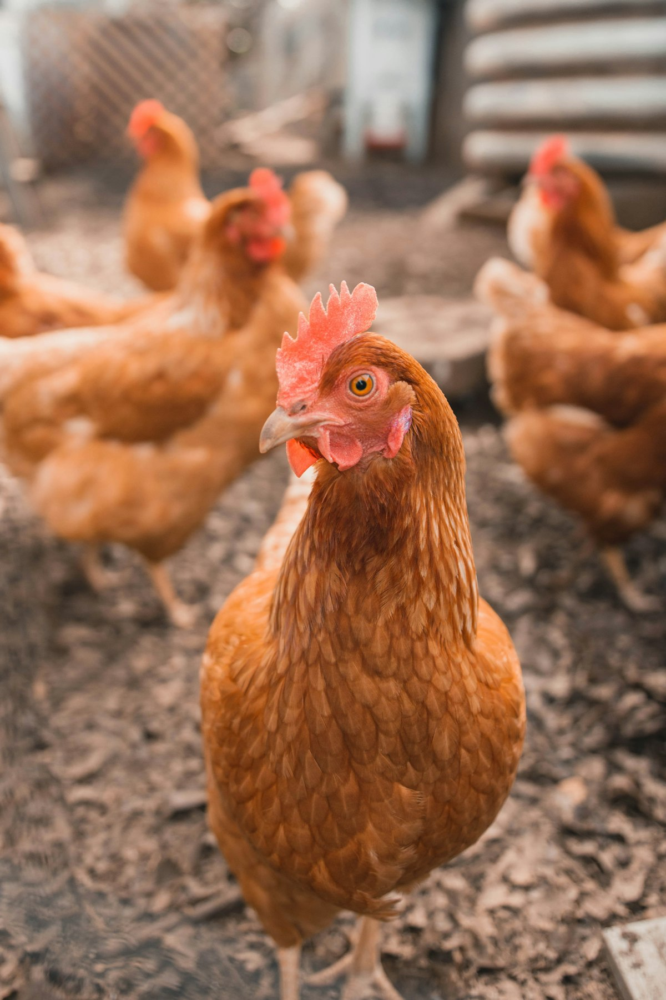
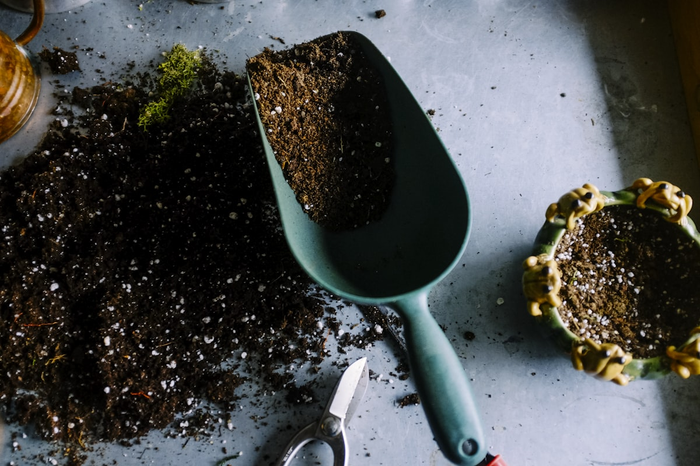
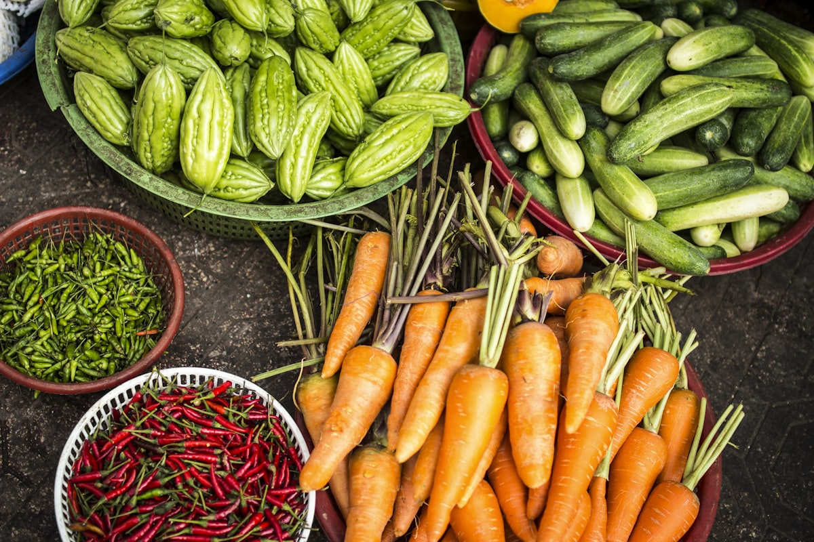
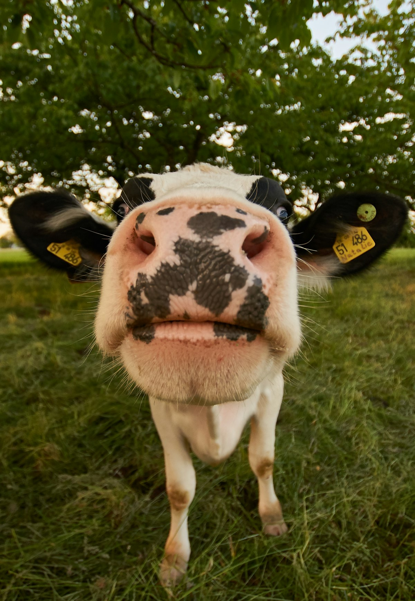

Featured · Start here
Soil pens and moisture sensors
The first buying call on a backyard plot or a small paddock: whether a finger test is enough, or a pen in the bed earns its keep.
Read guideHonest, practical buying criteria to help you choose and set up the right gear for a small place.

Featured · Start here
The first buying call on a backyard plot or a small paddock: whether a finger test is enough, or a pen in the bed earns its keep.
Read guide
FenceJoules, solar vs plug-in, and grounding so a paddock holds a pulse.

WaterTanks, drinkers, refill rate, and what fails when power drops.

SoilHandheld probes, a probe left in a bed, and when a finger test is enough.

GardenClock, soil skip, and weather skip for raised beds — not a pivot.

LivestockCloth shade, water space, and coop air before misters.
 Garden
Garden
Light, scale, and notes so extension or chat can see what you see.